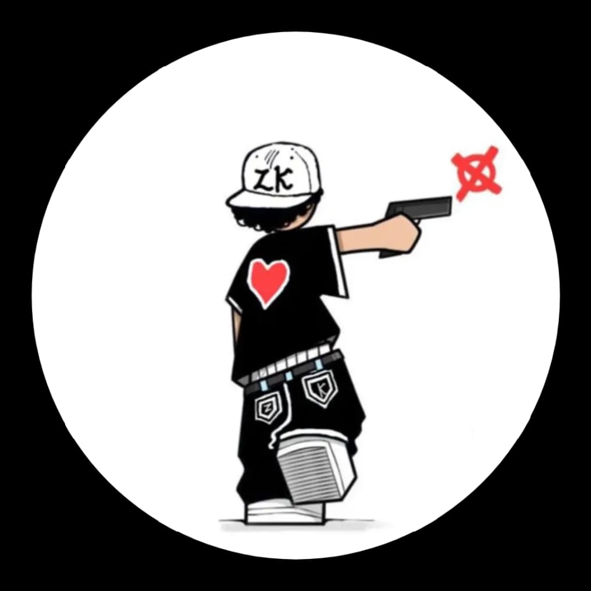

Cody
Content Creator, Currently Lives In Kingston, Jamaica. YouTuber with a Goal Of 150k+ subs and Streamer at Twitch.
👉 codywastaken2@gmail.com
Work Flow
🚧 MULTI GAME STREAMER
07/2024 - Present
I play Many Games so please expect multiple different game content! But Mostly These 3
- FreeFire
- MineCraft
- PokeMMO